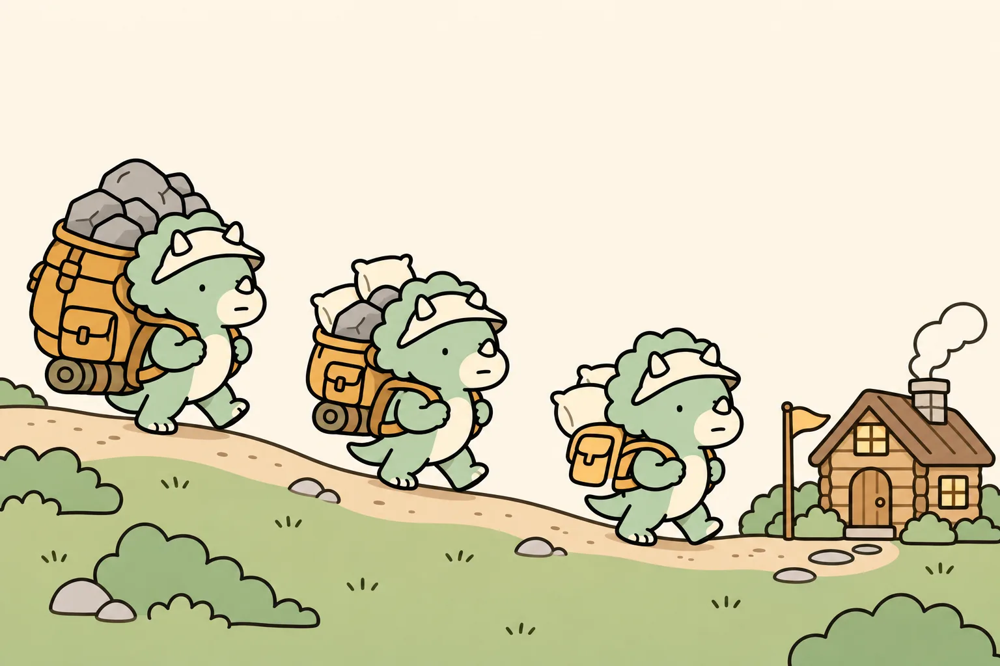
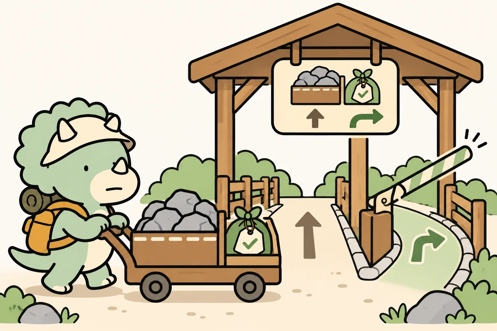
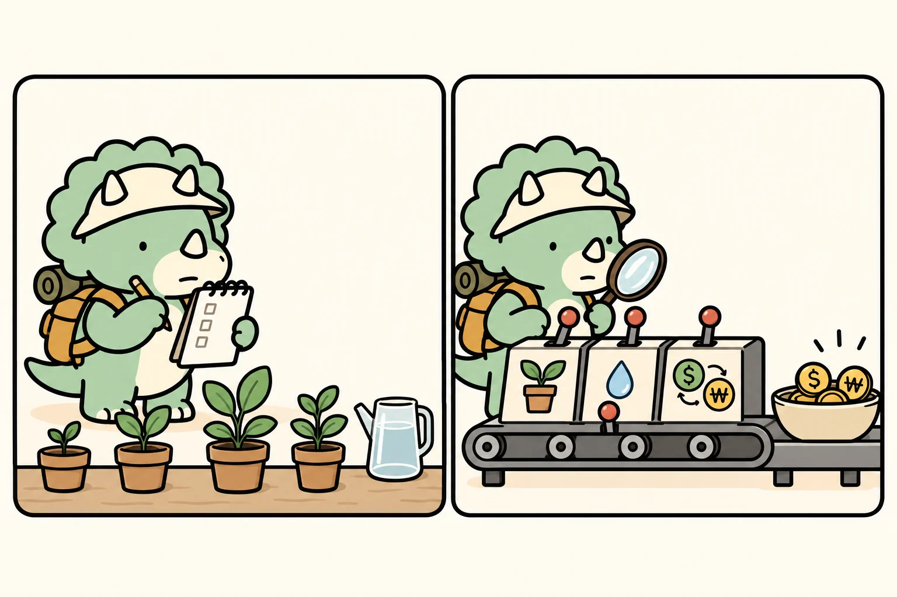

연금·IRP에 TDF 넣기 전에
펀드로 살까, ETF로 살까
같은 TDF라도 어떤 형태로 사느냐에 따라 20년 뒤 비용이 1천만 원 넘게 벌어질 수 있습니다. 다만 그 차이보다 먼저 확인해야 할 것이 두 가지 있습니다.

01먼저 결론
- 몇 년 상품을 고를지와 주식 비중이 수익률을 가장 크게 가릅니다. 같은 2045라도 운용사마다 주식을 담는 비율과 투자 지역이 다릅니다.
- 계좌 규칙이 고를 수 있는 범위를 정합니다. IRP에서 100%까지 담으려면 상품이 적격 TDF여야 하고, 은행 IRP라면 ETF를 아예 살 수 없는 경우도 있습니다.
- 앞의 두 가지가 같다면 그다음은 실제로 빠지는 비용과 내 습관입니다. 비용은 ETF가 낮은 편이고, 한번 걸어 두고 신경 쓰지 않는 데는 펀드가 편합니다.
그래서 이 글의 기준은 이렇게 정리됩니다. 증권사 연금저축이라면 같은 조건의 ETF를 먼저 검토합니다. IRP는 내가 쓰는 금융사의 상품 목록과 적격 여부를 먼저 확인합니다. 그리고 시장이 흔들릴 때 손이 먼저 움직이는 사람이라면, 보수를 조금 더 내더라도 펀드 자동이체를 고르는 편이 결과적으로 남는 돈이 더 많을 수 있습니다. 제가 실제로 계좌를 나눠 쓰는 방식은 08장에 따로 적었습니다.
02TDF를 30초 만에
TDF(Target Date Fund)는 이름에 붙은 연도, 예를 들어 2045를 은퇴 시점으로 보고 주식과 채권 비중을 운용사가 알아서 조절해 주는 상품입니다. 젊을 때는 주식을 많이 담고, 목표 연도가 가까워질수록 채권 비중을 늘립니다. 시간에 따라 이 비중이 바뀌는 길을 글라이드패스라고 부릅니다.

특정 상품이 아니라 개념을 보여 주는 예시 곡선입니다. 실제로 몇 년에 걸쳐 어느 정도 속도로 비중을 줄이는지는 운용사 투자설명서에 나옵니다.
내 상품의 연도 고르기
보통은 출생 연도 + 60에 가까운 5년 단위 연도를 고릅니다. 다만 실제로 연금을 꺼내 쓰기 시작할 해가 기준입니다. 일찍 은퇴할 계획이라면 앞당기고, 오래 일할 계획이라면 늦춰도 됩니다.
03펀드와 ETF, 8가지 차이

| 항목 | TDF 펀드 | TDF ETF |
|---|---|---|
| 체결 방식 | 하루 한 번 기준가로 체결되고 주문한 날 가격을 알 수 없음 | 장중에 실시간 가격으로 바로 매매 |
| 비용 | 연금 온라인 클래스(C-Pe 등)도 총보수 0.7% 안팎이며, 재간접 구조라 실제 비용은 더 높음 | 총보수 0.2~0.3%대 상품이 있고, 기타비용을 더해도 대체로 펀드보다 낮음 |
| 적립 자동화 | 자동이체만 걸어 두면 매달 알아서 매수 | 직접 매수해야 하지만, 일부 증권사는 연금 ETF 정기 자동매수 기능을 제공 |
| 분배금 | 펀드 안에서 재투자되는 경우가 많음 | 현금으로 들어오므로 계좌에 쌓인 돈을 다시 매수해야 함 |
| 돈 빼는 속도 | 환매 신청 후 지급까지 영업일 기준 며칠에서 일주일 이상 걸림(상품마다 다름) | 매도 후 T+2 결제 |
| 투명성 | 보유 내역을 정기 보고서로 확인 | 매일 구성종목(PDF) 공개 |
| 역사·규모 | 2016년 무렵부터 운용된 상품이 많고 설정액이 큼 | 2022년 이후 상장된 상품이 대부분이라 운용 기록이 짧고, 거래량이 적은 상품도 있음 |
| 행동 위험 | 시세를 볼 일이 적어 자주 사고팔게 되지 않음 | 실시간 호가 때문에 타이밍을 노리고 싶어지는 유혹이 생김 |
초록 칸은 해당 항목에서 상대적으로 유리한 쪽입니다. 체결 방식은 사람에 따라 장점이 되기도 하고 단점이 되기도 해서 따로 표시하지 않았습니다.
04보수가 쌓이면 얼마일까
비용 차이는 매년 0.5%포인트 정도로 작아 보이지만, 연금처럼 20년 넘게 적립하면 금액으로 꽤 커집니다. 아래 계산은 매달 50만 원 적립, 비용을 빼기 전 연 6% 수익이라는 가정 하나로 비용만 바꿔 본 결과입니다.
| 적립 기간 | 낸 원금 | 비용 0.87% 펀드 C-Pe 합성총보수 예 | 비용 0.42% | 비용 0.30% 저비용 ETF 예 | 0.87% 대비 차이 |
|---|---|---|---|---|---|
| 10년 | 6,000만 | 7,804만 | 7,987만 | 8,037만 | +183만 ~ +233만 |
| 20년 | 1억 2,000만 | 2억 678만 | 2억 1,733만 | 2억 2,027만 | +1,055만 ~ +1,349만 |
| 25년 | 1억 5,000만 | 2억 9,976만 | 3억 1,966만 | 3억 2,527만 | +1,990만 ~ +2,551만 |
수익률은 실제 상품의 성과나 예측이 아니라 비용 효과만 보기 위해 넣은 가정입니다. 세금은 반영하지 않았고, 연금 계좌 자체의 수수료와 매매 수수료도 0원으로 가정했습니다. 단위는 원입니다.

05같은 2045도 속이 다르다
수익률 차이를 먼저 만드는 것은 펀드냐 ETF냐가 아니라 주식을 몇 % 담느냐, 그리고 어느 나라 자산에 나눠 담느냐입니다. 지금 공개된 숫자로 몇 개를 나란히 놓으면 이렇습니다.
| 상품 | 형태 | 총보수 | 실제 비용 참고 | 위험자산 비중·특징 | 기준일 |
|---|---|---|---|---|---|
| TIGER TDF2045 적격 | ETF(지수형) | 0.19% | 총 수수료율 0.30% | 약 80%(S&P500·국내 채권 중심 지수 추종). 순자산 7,659억 | 보수·순자산 2026-11-02 / 비중 2025-07-27 |
| KODEX TDF2050액티브 | ETF(액티브) | 0.30% | 총 수수료율 0.42% | 약 73% | 보수 2026-09-04 / 나머지 2025-07-27 |
| RISE TDF2050액티브 | ETF(액티브) | — | 총 수수료율 0.17% | 약 77% | 2025-07-27 |
| ACE TDF2050액티브 | ETF(액티브) | — | 총 수수료율 0.45% | 약 69% | 2025-07-27 |
| 미래에셋전략배분적격TDF2045 C-Pe | 펀드(재간접) | 0.71% | 합성총보수 0.87% | 2017년 설정, 해외 ETF 등에 재투자 | 2026-07-09 |
출처마다 기준일이 다르고 '총 수수료율'과 '합성총보수'의 정의도 조금씩 다르기 때문에 순위를 매기는 용도로 쓰면 안 됩니다. 사기 전에 운용사 공시에서 같은 날 기준으로 다시 확인하세요.
06IRP 70% 규칙과 적격 TDF
위험자산 한도가 없어서 TDF든 주식형 ETF든 100%까지 담을 수 있습니다. 다만 증권사 연금저축이 아니면 ETF를 살 수 없습니다. 은행이나 보험사 연금저축은 판매하는 상품만 고를 수 있습니다.
주식형 같은 위험자산은 적립금의 70%까지만 담을 수 있습니다. 예외가 적격 TDF입니다. 요건을 갖춘 적격 TDF는 100%까지 편입할 수 있습니다. 상품명에 '적격'이 들어 있는지, 금융사 화면에서 위험자산 한도 예외로 분류되는지 확인하세요.

그래서 많이 쓰는 조합
IRP에서 주식형 ETF 70%에 적격 TDF 30%를 담는 방식입니다. TDF 안의 주식 비중이 80%라면 실제 주식 노출은 70% + 30% × 0.8 = 약 94%가 됩니다. 규정상으로는 문제가 없지만, 이 계좌가 거의 주식형 계좌가 된다는 뜻입니다.
정부는 2026년 10월 29일 발표한 퇴직연금 기능 강화 방안에서 IRP 위험자산 70% 한도를 단계적으로 완화하겠다고 밝혔습니다. 다만 어느 정도로, 언제부터 바뀌는지는 아직 정해지지 않았습니다(2026-11-03 확인). 바뀌기 전까지는 지금 규칙을 기준으로 판단합니다.
07내 선택 순서
- 목표 연도를 정합니다. 출생 연도 + 60을 출발점으로 삼되, 실제로 연금을 꺼내 쓰기 시작할 해를 기준으로 조정합니다.
- 계좌가 허용하는 범위를 확인합니다. 은행 IRP는 ETF를 살 수 없거나 고를 수 있는 상품이 적을 수 있습니다. IRP에서 TDF를 30% 넘게 담으려면 적격 여부를 확인합니다.
- 같은 연도 후보의 주식 비중과 투자 지역을 비교합니다. 내 위험 감내 수준보다 지나치게 공격적이거나 보수적인 상품은 뺍니다.
- 남은 후보끼리 실제 비용을 비교합니다. ETF는 총보수에 기타비용을 더해 보고, 펀드는 연금용 온라인 클래스(C-Pe·P2e 등)의 합성총보수를 봅니다.
- 마지막으로 내 습관을 봅니다. 하락장에 매도 버튼을 누를 것 같다면 펀드 자동이체를 고릅니다. 비용을 줄이고 분배금 재투자까지 직접 챙길 수 있다면 ETF가 맞습니다.

마지막 단계에서 정직해지는 것이 중요합니다. 실시간 호가를 보면서 "조금 더 빠지면 사야지" 하다 몇 달 적립을 거르면, 그 손실이 연 0.5%포인트의 보수 차이보다 쉽게 커집니다.
08배당노마드의 내 방식
여기까지가 일반적인 기준이라면, 지금부터는 제가 연금과 IRP에 TDF를 넣으면서 따로 정해 둔 원칙입니다. 정답은 아니지만, 펀드냐 ETF냐보다 이쪽 실수가 실제로 더 비싸다고 봅니다.
① 계좌마다 역할을 하나씩만 준다
| 계좌 | 제 기본값 | 이유 |
|---|---|---|
| 연금저축(증권사) | 직접 고른 주식 ETF 조합 또는 TDF ETF 하나. 둘을 같이 담지 않는다 | 한도가 없어 어느 쪽이든 가능하지만, 섞으면 TDF가 해 주는 비중 조절이 의미를 잃는다 |
| IRP | 주식 ETF 70% + 적격 TDF 30%. 계좌를 자주 볼 자신이 없으면 적격 TDF 100% | 30% 칸을 예금으로만 채우면 장기 적립기에는 너무 보수적이다 |
| 회사 DC | 디폴트옵션 TDF로 두고 1년에 한 번만 확인 | 직접 운용의 핵심은 지식보다 3년 뒤에도 계속 볼 수 있느냐다 |
② TDF를 넣었다고 안전해진 게 아니다. 계좌를 합쳐서 본다
TDF를 담으면 왠지 계좌 전체가 얌전해진 느낌이 듭니다. 실제로는 그렇지 않을 때가 많습니다. 잔고로 가중해서 계산해 보면 바로 보입니다.
예시: 연금저축 3,000만 원을 주식 ETF 100%로, IRP 2,000만 원을 적격 TDF 100%(주식 약 80%)로 운용
→ 전체 주식 비중 = (3,000만 + 2,000만 × 0.8) ÷ 5,000만 = 92%
두 계좌의 비중을 단순 평균(90%)하지 않고 잔고로 가중합니다. 금액은 계산을 보여 주기 위한 예시입니다.
92%가 틀렸다는 뜻은 아닙니다. 다만 "TDF를 샀으니 이제 반쯤은 안전하다"는 생각과 실제 숫자는 이만큼 차이가 납니다. 제가 TDF를 고를 때 가장 먼저 하는 일은 합산 주식 비중을 한 줄로 계산해 보는 것입니다.
③ 인출이 시작되면 TDF 하나로 버티지 않는다
TDF는 모으는 시기에 맞춘 상품입니다. 연금을 꺼내 쓰기 시작한 뒤 TDF 하나만 들고 있으면, 주가가 빠진 해에도 생활비를 위해 주식과 채권을 같은 비율로 함께 팔게 됩니다. 그래서 저는 인출 2~3년 전부터 앞으로 2~3년 치 생활비 부족분을 예금·단기채로 따로 떼어 두고, TDF는 그다음에 쓸 돈으로 남겨 둘 계획입니다. 생활비 부족분은 국민연금처럼 확정된 소득을 빼고 남는 금액입니다.
④ 분배금은 월급이 아니라 다시 넣을 돈이다
배당 블로그를 하다 보니 TDF ETF 분배금도 눈에 들어옵니다. TIGER TDF2045의 최근 1년 분배금은 주당 140원, 분배율로 1.21%였습니다(FunETF, 2026-11-02 기준). 적립기 연금 계좌에서는 이 돈을 꺼내 쓰는 게 아니라 바로 같은 상품을 다시 사는 것까지가 한 세트입니다. 현금으로 몇 달씩 놀리면 ETF를 골라 아낀 보수가 그대로 사라집니다.
⑤ 1년에 한 번, 12월에 세 줄만 점검한다
연금저축과 IRP는 세액공제 때문에 어차피 12월에 한 번은 들여다보게 됩니다. 그때 이 세 줄만 확인합니다.
- 목표 연도가 아직도 내가 실제로 은퇴할 해와 맞는가
- 모든 연금 계좌를 합친 주식 비중이 내가 버틸 수 있는 수준인가
- 자동이체나 자동매수, 분배금 재투자가 멈추지 않고 돌아가고 있는가
나머지 열한 달은 들여다보지 않는 것이 이 방식의 핵심입니다.
09사기 전 점검표

- 상품명의 연도가 실제로 연금을 꺼내 쓸 시점과 맞는가
- 투자설명서의 글라이드패스에서 지금 주식 비중과 목표 연도의 주식 비중을 확인했는가
- IRP라면 상품명에 '적격'이 들어 있고 금융사 화면에서 한도 예외로 표시되는가
- ETF라면 총보수와 기타비용을 함께 봤는가. 펀드라면 연금용 온라인 클래스의 합성총보수를 봤는가
- ETF라면 거래대금과 호가 간격이 적립하기에 충분한가
- ETF 분배금을 현금으로 놀리지 않고 다시 매수할 방법(자동매수 등)이 있는가
- 이미 가진 S&P500·나스닥100 ETF와 얼마나 겹치는지 계산했는가
- 목표 연도가 다른 TDF 여러 개를 섞어 글라이드패스를 망가뜨리고 있지 않은가
출처
- FunETF, TIGER TDF2045 적격(0025N0) — 총보수 0.19%, 순자산 7,659억(2026-11-02)
- FunETF, 미래에셋전략배분적격TDF2045 C-Pe — 총보수 0.71%, 합성총보수 0.866%(2026-07-09)
- ETF Official, KODEX TDF2050액티브 — 총보수 0.3%(2026-09-04)
- Homo Economicus, TDF 2050 ETF 비교 — 총 수수료율·위험자산 비중(2025-07-27)
- 이투데이, 퇴직연금 30% 잡아라…TDF·채권혼합 ETF 경쟁 가열 — 적격 TDF 100% 편입, IRP 한도 완화 발표(2026-11-03)
- KCGI자산운용, TDF/TIF 안내 — 적격 TDF 요건
- 배당노마드, 퇴직연금 디폴트옵션 vs 직접 ETF 2026 — 디폴트옵션·위험자산 70% 기준
참고한 영상: 박곰희TV, TDF는 펀드로 사는게 좋을까? ETF로 사는게 좋을까? — 생각을 정리하는 계기가 됐고, 본문 숫자와 판단은 위 공시 자료와 직접 계산을 기준으로 다시 정리했습니다.